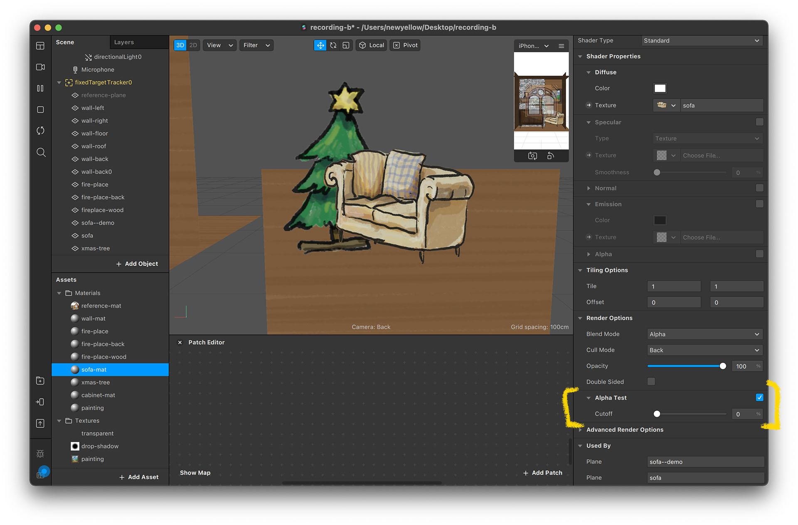
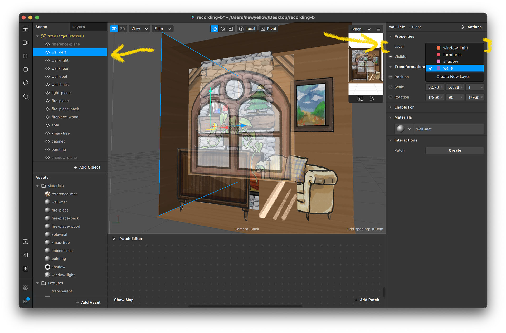
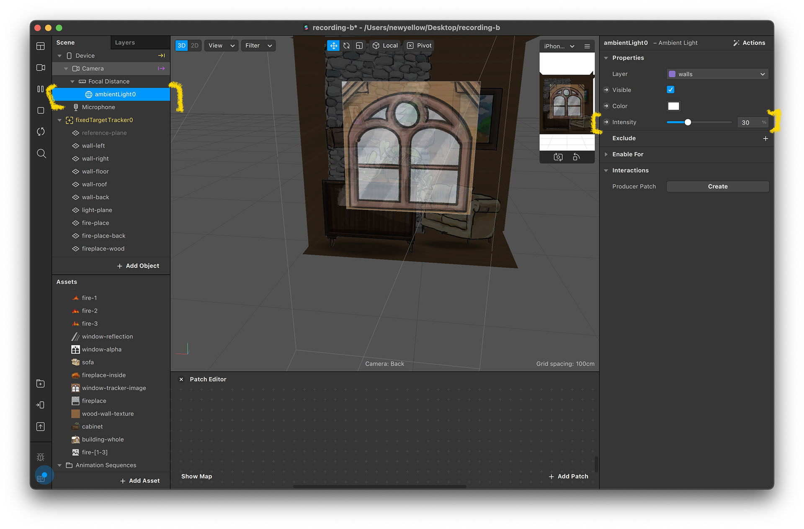
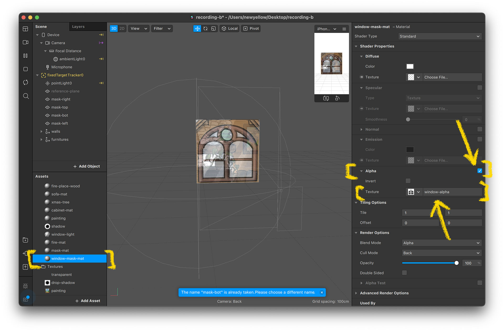

Project Description
For this project, we are going to build a 3D room and create a “see-through window” experience using the masking trick.
Through this project, you will learn to use the layer setting in Spark AR, learn the masking technique, and have a better understanding of the materials.
Assets for this Project
You can download all the assets here: Project B - Woodhouse.zip
- It is strongly recommended that you take the Snowman tutorial before starting this one. The Snowman tutorial provides a very detailed walk-through of the basic functions that will not be covered here.
Set Up Tracking
For this step, you need to:
- Create a new project
- Add fixedTargetTracker to the scene (or select Target Tracking while creating project)
- Import the images
- Change fixedTargetTracker image to window texture
After you’re done, the project will look like this:
These steps have been covered in the Snowman. If you’re not familiar with them, please refer to the Snowman tutorial.
Setting Up Room Space
For this project, we want to create a “see-through window” experience for the user to get a feel of the interior space. Therefore, we need to build a room space.
Place a Reference Image
To match the virtual room size with the paper model, we can use a reference image as a guidance when creating the space.
- Add a Plane on the tracker and set its material using the whole-building image.
- Scale and move the reference image and match the window section with the tracker image.
- Set material opacity to 0.6. Now you have a view of the whole building in the editor.


Set Up the Walls
- Create a material named “wall-mat” and select “wood-wall-texture”.
- Create five planes and position them into a room behind the reference image.
- Using the reference image, we can match the wall with the building image size. This will make the AR effect more realistic.


Install Furniture
- There are some images you can use as furniture. Create materials for each and position them wherever you like.
- It's kind of like creating layered paper art. The difference of depth (position z) creates parallax effects when you view the effect on your device.
- While placing the furniture, you may notice some weird situations where the foreground image cuts out the background image.
- To solve this issue, we need to grasp a better understanding of Material and Layer.


The transparent issue
It's kind of weird that the transparent part of an image would block the images behind it. This is due to Spark AR’s treatment of images with transparent and semi-transparent images. But it's not really the faut of the Spark team; it's a common occurrence issue in real-time rendering.
There are two ways to fix this problem in Spark AR, each with its pros and cons.
Fixing by using Alpha Test
In Spark AR, even if part of the image is totally transparent (0% opacity), it does not mean “none” or “nothing” in 3D. The shape will remain visible. You can see the outline of the shape being a rectangle when selected.

Checking “ Alpha Test” means that you wish to treat the transparent parts as “none”, so the shape will not be visible. The Alpha Test number refers to the opacity threshold, with 10 meaning parts with opacity under 10% will be treated as non-existent, a.k.a. “"cutout”. This kind of material setting is therefore also known as “cutout materials” in other 3D softwares.

By checking Alpha Test on all materials, this issue on furniture can easily be fixed.

This is sufficient for the furniture in this project since the images have solid edges and have no semi-transparent parts. This, however, will not work for semi-transparent images such as the sofa's shadow or the window reflection light.


Therefore, we need another fix for such issues.
Fixing by setting the layers
Layer defines the rendering order of each object. If the object is closer to the camera, the order of its layer should be above other things further back. For now, we will use the layer setting to fix the transparency issues of the sofa shadow and window reflection light.
- Click on the “Layers” label beside “Scene” to switch to Layers Panel.
- Click on the “+ Add Layer” button to add layers. We need four to make the visual right. Double click on the layer's name to rename.
- You set the order of the layers by dragging their names. Rearrange them in the following order: window-light, furniture, shadow, walls.
- Select “wall plane” and you’ll see the layer setting on the right. Set layer to walls. 
- You can select multiple objects and assign their layers simultaneously.
- Assign all wall planes to walls layer, all furniture to furniture layer, sofa shadow to shadow layer, and window light plane to the window-light layer.
- Now, the shadow and the window reflection light should look right.


*Opacity and Blend Mode
You can play around with the material's Blending Modes settings. This defines how the image interacts with the image “behind” it. For my project, I chose "Multiply" for the shadow material and "Add" for the light.

If you think that the shadow is too dark or the light is too bright, you can adjust their opacity value.
You can also try using other blend modes to test the results. To find out more about the blend mode, you can check its Wikipedia page: Wiki - Blend Mode
And if you are not satisfied with build-in blend modes, you could also try positlab's Photoshop blend modes project.
https://github.com/positlabs/spark-blend-modesAnimated Fire
You can also create animated images using the image sequence. We have here a fire sequence for practice.
- Click on “Add Asset” in the Assets panel.
- Choose “Animation Sequence” and a new asset will be created. Rename it to “fire-animation”.
- Click on “Choose File” in the inspector and select “sequence images”.
- Now. the texture sequence object fire-[1-3] is created.
- Create a material and set the texture to “fire-animation”. Now you can see the fire being animated.
- You can change the animation speed by altering its FPS value.


Setting Up the Lights
As fire is burning inside the house, the lights should flicker. Let's set up some lights instead of using the default lighting.
Adding Lights into the Scene
- Delete the default directionalLight0 (this object is automatically generated when the project is created).
- Pick ambientLight0 and set its Intensity value to 30. 
- Add a “Point Light” object and make sure it is under the fixedTargetTracker0 hierarchy.
- Place the point light in front of fireplace.
- Set the light's intensity to 200 (you can set to above 100 by typing in the value) and range to 0.5.

Animating the Light Intensity
- Click on the arrow beside Intensity value To display Patch Editor panel. Add a transition patch and a loop animation patch. This is similar to the animation section in Project A (Snowman).
- The default transition patch transforms three values (x, y, z)., but the intensity value only requires one. Click on the transition patch, then click on the Vector3 box and change the value to number.
- Connect the inputs and outputs. Play around with different values to find the flickering pattern you like.
- You can also animate ambient lights. The loop animation patch can be used for both transition patches should you want to sync their animation.


*Light Types
If you want to find out more about different lighting types, you can check the official guide: Lights in Spark AR Studio
Test the Room
Now the room is ready for you to test with your device. It should look something like this:

Oops! The whole wall is transparent, while what we want is a see-through-window experience. So, we now need to set up the mask.
Setting Up the Mask
In augmented reality rendering, virtual objects are always rendered in front of the camera image. This is because our device cameras only capture 2D images from the real world, which lacks information on depth. To make virtual objects render behind real-world images, we need masks.
In Spark AR Studio, a mask can be created through transparent materials with proper layer settings.
Set Up Walls Mask
- Create a plane named “mask-plane” and create a material named “mask-mat”.
- Change the shader type to flat and set its opacity to 0.
- Select “mask-plane”, click on “layer” on the right, and click on “Create New Layer”.
- Now, a new layer is created and assigned to the mask-plane.
- Switch to the layer panel by click on “Layer”. Drag the created layer to the bottom (order it to the last).
- You can rename the layer to “mask”.
- Switch back to the scene panel and you should see the mask-plane become transparent, while making the images behind it disappear.
- Duplicate the mask-plane and put them beside the fixedTargetTracker. Make sure you leave a space in the center for the window.


Set Up Window Mask
- The window mask is slightly different. Instead of masking the entire rectangle, we use an image here to define the masking shape.
- Create a new material and rename it to “window-mask-mat”.
- Create a new plane assign the material to it, and rename it to “window-mask-plane”.
- Scale the window-mask-plane to fit the fixedTargetTracker reference. The scale should be 3, 3, 1 for it to fit perfectly.
- Check “Alpha” and set the texture to “window-alpha”. 
- Check “Alpha Test”.
- Now, let’s set up the material (window-mask-mat) to make it a mask. Set opacity to 1 and cutoff (see “Alpha Test” section) to 0.
- Set window-mask-plane's layer to “mask”.
- You can see the color change, with the window wall now covering up the background.
- Test with your device. If done correctly, it should look like this:


Now the project is completed. Congratulations!
You should be able to see a result as displayed in the video below: